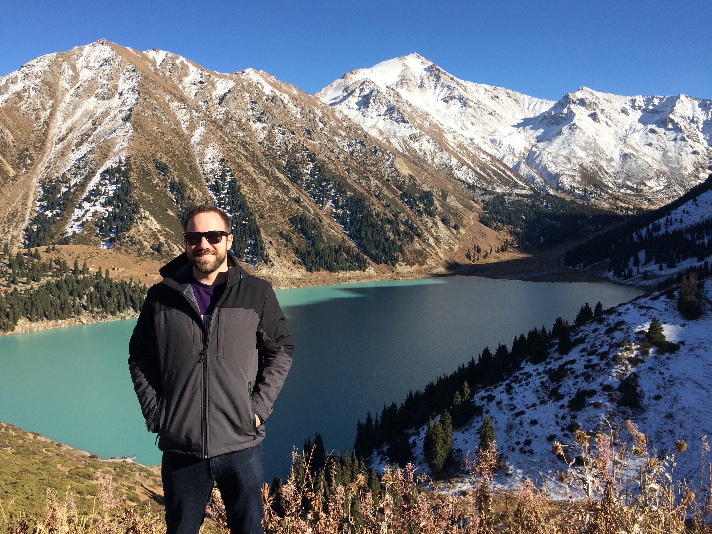

About Me
Hey there! My name is Alex, and I'm a student in Code Fellows' Code 201 course. A born-and-raised Washingtonian, I've long been interested in learning to code thanks to the thriving technology industry in my beautiful hometown of Seattle. Pacific Northwest is best, as they say.
I attended my hometown University of Washington for both my undergraduate and graduate degrees, several years of which were spent living abroad in the Netherlands, Serbia, and the Republic of Georgia. However, Seattle was always home through it all.
After several years in the travel industry, where I indulged in my deep passion for exploring the world by developing and leading programs in the former Soviet Union, and had the pleasure of experiencing lesser-visited locations from Iran to Turkmenistan, I’ve finally found the opportunity to dedicate myself to web development as a career. This re-orientation is a huge change for me, and I’m ready to embrace it with open arms.
As someone fascinated by linguistics and languages, especially their acquisition and development, writing code is a perfect analogy for learning a new language. There are countless similarities between human and coding languages, and that’s a huge part of what makes the field so absorbing - coding languages are ultimately a human construct, which means that everyone has the power to use them to create.
My personal pursuits including gaming (I’m a dedicated fan of Nintendo products), captaining my beloved Underdog flag football team (four-time league champs!), and taking in the natural beauty of every continent on Earth (currently on a quest to visit as many U.S. National Parks as possible).